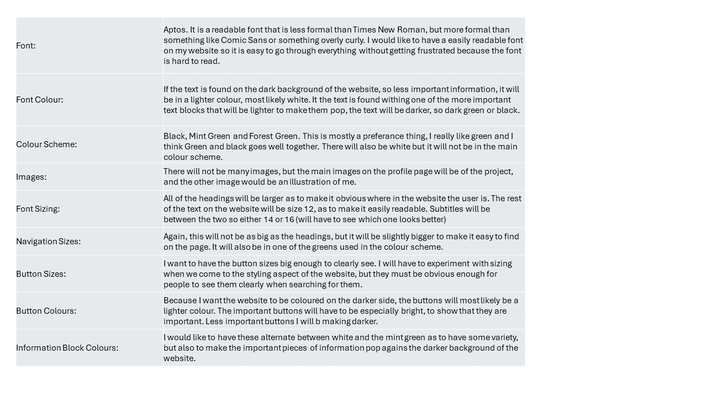

Interface Elements
- Home Page:
- The user will be able to scroll down to view everything on the page.
- There will be buttons on the top of the page for navigation.
- There will be buttons in each section as well that will take the user to the page that gives more information about the part that they are currently reading or looking at.
- There will be links at the bottom of the page that link to social media profiles.
- Portfolio:
- The user will be able to scroll down to view everything on the page.
- There will be buttons on the top of the page for navigation.
- Each portfolio piece will have a drop-down section that gives more information about the item and links to where the projects can be found.
- There will be links at the bottom of the page that link to social media profiles
- Profile:
- The user will be able to scroll down to view everything on the page.
- There will be buttons on the top of the page for navigation.
- Maybe there will be more interactive aspects here, where some of the information is minimised and if the user wants to know more, they will be able to expand on the part they want to know more about.
- There will be links at the bottom of the page that link to social media profiles.
- Design:
- The user will be able to scroll down to view everything on the page.
- There will be buttons on the top of the page for navigation.
- Each design section will be 'minimised', there will be a button that takes the user to more detail about each section.
- There will be links at the bottom of the page that link to social media profiles.
- Essays:
- The user will be able to scroll down to view everything on the page.
- There will be buttons on the top of the page for navigation.
- On the main part of this page there will be the name of each essay, adn there will be a button that takes the user to the essay.
- There will be links at the bottom of the page that link to social media profiles.
- Blogs:
- The user will be able to scroll down to view everything on the page.
- There will be buttons on the top of the page for navigation.
- There will be a list of the blog posts that the user can access through a button that takes them to a more expansive blogpost of the same name.
- There will be links at the bottom of the page that link to social media profiles
Style Guide
This will be expanded, but here are some basic decisions I have made thus far.
